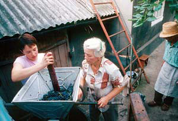

Forty-five years after the inception of the Peace Corps, the program still sends volunteers to 75 developing nations. Volunteers serve in a wide range of fields, but applicants with experience in farm management, animal husbandry and organic farming are especially valuable.
Agriculture is the primary economic activity of most of the world’s people, yet many of them struggle to produce enough food for themselves. Peace Corps volunteers help farmers become more productive, increase income and improve local diets by teaching techniques consistent with environmental conservation.
Ohio native Thomas Keller is working with farmers in Europe’s poorest nation, Moldova, located between Romania and Ukraine. Keller says the most satisfying part of serving is “learning traditions and participating in them ... Eating the food, learning the language, learning about their holidays.” Peace Corps volunteers serve for 27 months, are placed where their specific skills will most benefit the developing community, and receive a stipend consistent with the local economy. Volunteers must be U.S. citizens at least 18 years old, but there is no maximum age.
Most volunteers have college degrees, but training or job experience in a specific field also can help land a position. Go to http://www.peacecorps.gov for more information or to apply for the program.
AmeriCorps, the domestic version of the Peace Corps, also offers opportunities in agriculture that require about 10 months of service. Both programs offer assistance in paying off education loans.
|
 PEACE CORPS Peace Corps volunteers in Moldova help many locals make and market wine. |
|
|